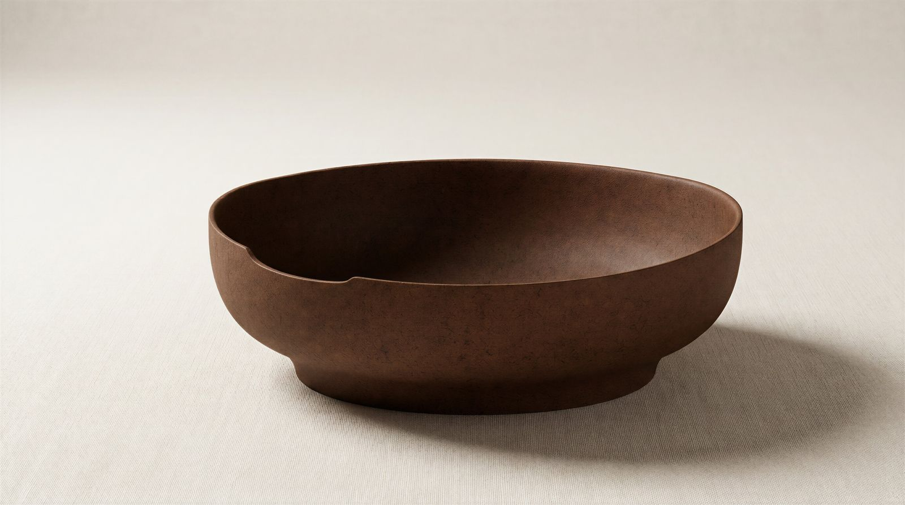
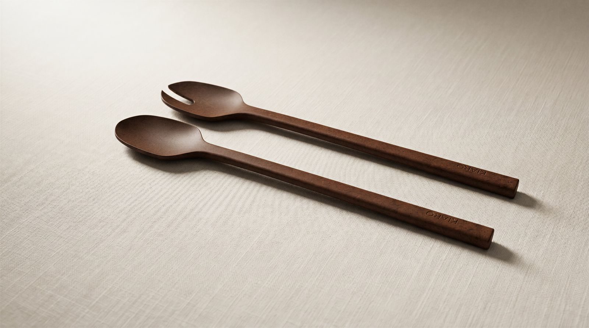
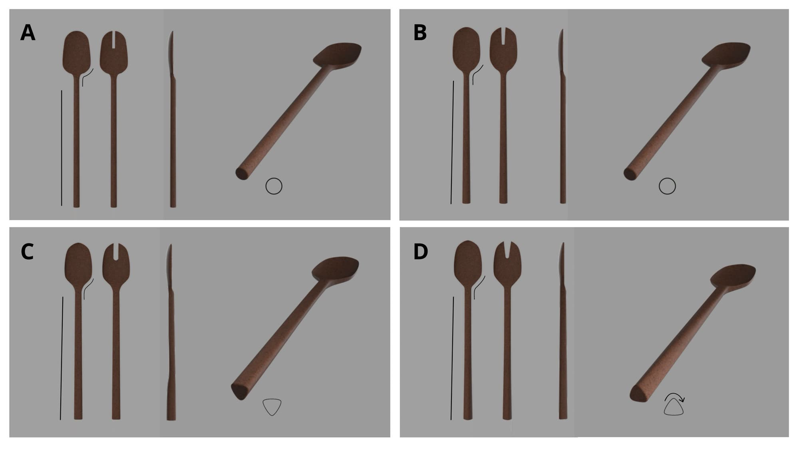
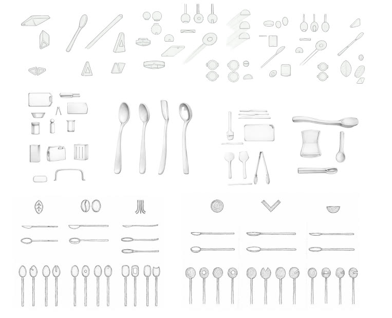
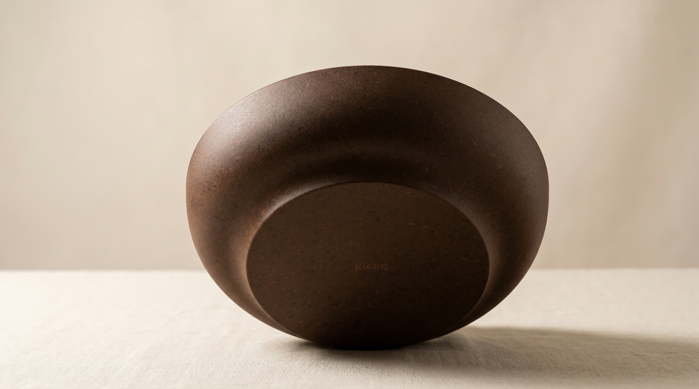
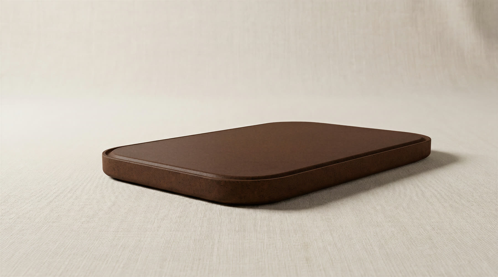
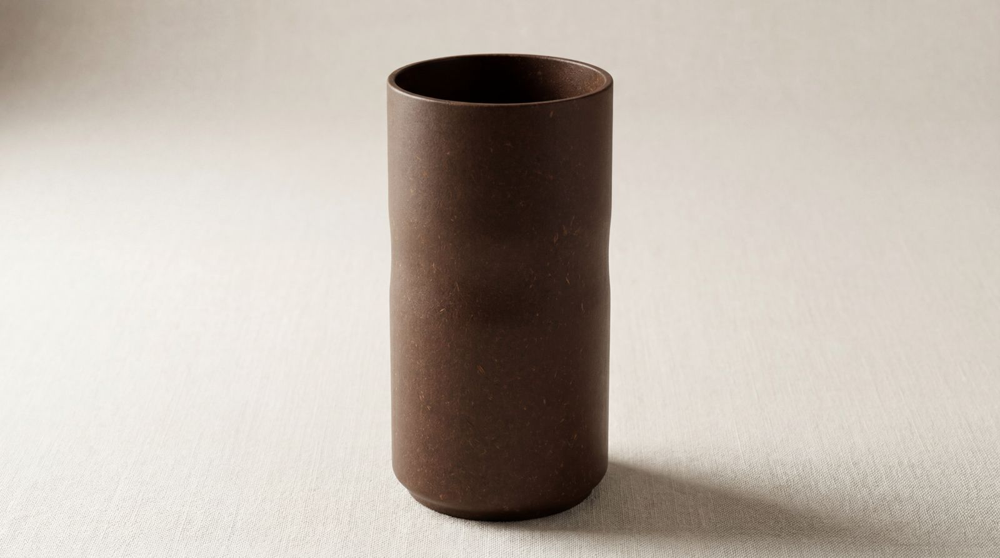
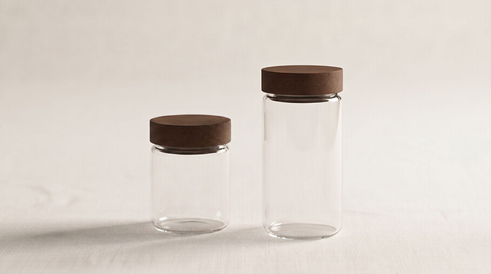
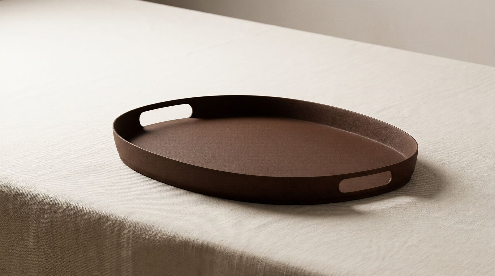

Can liquid wood feel premium?
A six-piece kitchenware collection in Arboblend, a lignin-based biocomposite. A bachelor thesis with Vaida Staberg, developed together with Yellon.
Arboblend costs more than ordinary plastic, so it lands in a higher price bracket. But people don't read biodegradable material as premium. They park it somewhere neutral, and when they buy, function matters more than sustainability. The problem wasn't the material. It was the perception.

Double Diamond, but material-driven: the material set the direction, not a user problem. Broad sketching came first. Then I built four CAD versions of the same salad servers — identical base dimensions, only the radii, taper and handle profile changed — and a validation survey ranked them on perceived premium. Concept C sat at the top, though the margins were small and shifted with age and gender. In parallel we sourced Arboblend directly from Tecnaro, specified for food contact, dishwasher use and low shrinkage, and 3D-printed prototypes to get the material in hand.


Kitchen tools, storage and serving — the categories the material study showed people trust the material in.





Sustainability alone doesn't sell premium. Form does. Small changes in radii and proportion moved how premium a product felt, even with the material and function held constant. And premium isn't universal, it depends on who's looking.